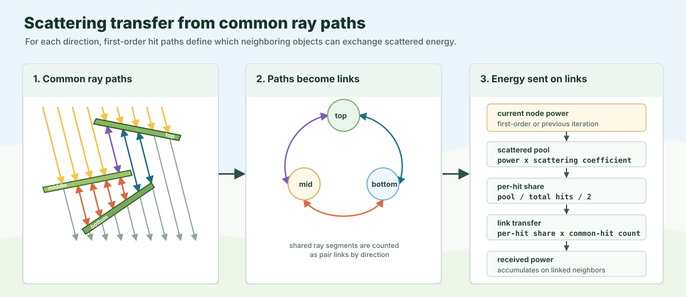

ARCHIMED Light Interception Reference
This page explains, in plain language, how ARCHIMED computes light interception, what the main hypotheses are, and how the Julia implementation in ArchimedLight.jl mirrors the original Java code. The goal is not only to document the software, but to describe the model itself. A reader should be able to understand the full computation pipeline without opening the source files.
The scope here is the light-only part of ARCHIMED: scene ingestion, solar and sky radiation, directional discretization with the turtle, first-order interception, multiple scattering, and the production of light output tables. Photosynthesis, energy balance, transpiration, and thermal calculations are intentionally left out because they are rather computed by PlantBiophysics.
What the model is trying to compute
At each meteorological time step, ARCHIMED estimates how much radiation each geometric component of a scene receives. A component is usually a triangle mesh attached to one topology node of a plant or an artificial object. The model distinguishes two broad spectral bands, PAR and NIR, and it distinguishes two physical stages. The first stage is direct interception of the incident radiation coming from the sky and the sun. The second stage is redistribution of part of that intercepted energy by multiple scattering between scene components.
The outputs are expressed both as irradiance, in watts per square meter of component area, and as energy integrated over the time step, in joules per component and per step. ARCHIMED also reports absorbed radiation, which is obtained from intercepted radiation and optical coefficients, as well as scene-level totals and group summaries.
The model is geometric and surfacic. It does not simulate a participating medium inside the canopy. Instead, it assumes that the scene is made of surfaces, represented as triangles, and that light travels along discrete directions. Along each direction, the scene is projected onto a 2D pixel table. Occlusion and exposure are then inferred from the ordering of projected hits inside each pixel.
The main hypotheses behind the computation
The most important hypothesis is that a plant is treated as a set of surfaces rather than as a volume. A leaf, for example, is represented by triangles. This is appropriate for many plant architectures, but it also means the model does not describe within-leaf or within-canopy volumetric extinction in the Beer-Lambert sense. All radiative interactions are handled at the surface level.
The second important hypothesis is that the sky is discretized into a finite number of sectors. In the standard ARCHIMED "turtle" discretization, the hemisphere is split into 1, 6, 16, 46, 136, or 406 sectors. Each sector receives a portion of diffuse radiation, and depending on configuration, the direct beam is either redistributed into nearby sectors or kept as a separate explicit sun direction. This makes the model directional, but still discrete.
The third hypothesis is the use of projected pixels. Rather than computing exact polygon-polygon overlap between every projected triangle and every infinitesimal portion of the plot, ARCHIMED rasterizes projected triangles onto a finite grid. This introduces discretization error. To compensate for the fact that a triangle may only partially cover some pixels, ARCHIMED applies an area-ratio correction: the true projected area of a triangle is divided by the area of the pixels that were marked as hit. This correction is central to the original method.
The fourth hypothesis concerns optical behavior. In first-order interception, the interception model says what fraction of incoming light is intercepted and what fraction passes through. In the standard Translucent model, this is controlled by a single transparency parameter. In scattering, a separate optical-properties model gives a scattering coefficient by waveband. This coefficient is not a full bidirectional reflectance model. It is a simpler phenomenological quantity used to decide how much previously intercepted radiation is re-emitted into the iterative scattering process.
Finally, the scene can be treated as periodic in the horizontal plane. This is the toricity option. When it is enabled, projected pixels that fall outside the plot are wrapped to the opposite side. In practice, this means the plot behaves like a tile repeated infinitely in the horizontal directions. This matters especially near the borders of the scene and is one of the subtle areas where exact Java parity is challenging.
Inputs and scene semantics
The original Java application starts from a YAML configuration file. That file points to an OPS scene file, one or more model files, and a meteo file. The scene file does not directly contain all geometry. Instead, it references OPF or GWA files, which contain plant topology and meshes. The model files define how each functional group and type should behave radiatively. The meteo file provides the weather forcing for each step.
In the Java code, MainParameters and its nested parameter classes read this configuration and derive a number of operational rules. Some options are passed directly from the user, such as the number of sky sectors, allInTurtle, toricity, pixel size, scattering activation, and the radiation substep duration. Other options are adjusted automatically. For example, the reduced pixel-table representation is effectively always enabled in the Java light process, and the "upper hit only" optimization is disabled when full scattering, virtual sensors, or light emitters require deeper pixel stacks.
Scene ingestion happens through ArchimedScene.loadOPS. The terrain line of the OPS file defines the plot box: its lower corner, its upper corner, and therefore the horizontal footprint over which projections are computed. Group comment lines such as #[Archimed] groupname identify the functional group associated with subsequent plant records. Each plant record gives the geometry file and the object transform: translation, azimuth, inclination, and stem twist. The OPF or GWA is then loaded, and the object transform is applied before the light computation begins.
The Julia implementation keeps the same physical logic but now exposes a functional runtime API. read_scene or PlantGeom.prepare_scene produce PlantGeom.SceneGeometry, read_models or prepare_models produce LightModels, and read_options or direct LightOptions(...) construction provide the runtime parameters. read_scene uses PlantGeom.read_ops and mesh-merging utilities to build a single scene graph with merged geometry and node-to-face mappings. The result is stored in PlantGeom.SceneGeometry, which contains the merged mesh, the face-to-node map, per-node area and barycenter summaries, and the source MTG where group, type, object id, and stable topology ids live. In other words, Java keeps a richer object tree alive during the computation, whereas Julia resolves more of the geometry into dense arrays and dictionaries ahead of time.
One important point is that functional groups are an ARCHIMED convention, not a property of OPS in general. The Julia port therefore keeps ARCHIMED-specific semantics in its own scene wiring and uses PlantGeom only for the generic geometry and file-format handling.
The plot box and the pixel grid
The plot box is more than a spatial bounding rectangle. It is also the support of the rasterized projection. Given a requested pixel size, ARCHIMED computes an integer number of pixels along each horizontal dimension. Because the number of pixels must be an integer, the effective pixel width and height are adjusted so that the pixel table exactly fits the plot dimensions. In other words, the requested pixel size is a target, but the effective pixel dimensions are those that tile the plot exactly.
This detail matters because every projected area is later converted to pixel counts and then corrected by the area-ratio term. If the effective pixel dimensions differ from the nominal value, the projected-pixel area differs as well. The Java PlotBox class makes this explicit by storing both the integer table size and the effective pixel dimensions and pixel area. The Julia code follows the same logic when it builds the interception geometry context.
Meteo forcing, time steps, and solar position
ARCHIMED does not assume that a meteo time step is radiatively uniform. The user provides meteo rows, typically with start and end times, and the light process may subdivide each row into smaller radiative substeps using the radiationTimestep parameter. The purpose is to account for the motion of the sun and for the fact that the direct beam direction can change meaningfully within a coarse meteo interval.
In Java, TurtleFluxes.createRadiativeFluxes constructs these substeps. The active implementation uses evenly sized substeps whose duration is bounded by radiationTimestep. Within each substep, the sun position is taken at the middle of the substep. Only the daylight portion is considered: sunrise and sunset are used to clip the effective sunlit part of the meteorological interval. Each substep therefore has its own solar geometry and its own decomposition of global radiation into direct and diffuse parts.
The sunset hour angle uses the standard denominator cos(latitude) * cos(declination), intentionally correcting an operator-precedence error in the legacy Java implementation. Polar day and polar night are represented explicitly so that daylight clipping covers either the complete civil day or none of it.
The Julia function compute_sky reproduces this logic in the style of the port. It parses the meteo row, computes a Java-compatible solar position, checks time consistency, and derives the extraterrestrial radiation and sky state needed for later partitioning. The Julia code also supports rows defined either through explicit durations or through start and end times, because the meteo files encountered in practice use both conventions.
From global meteo radiation to directional sky fluxes
Once the sun position is known, the next question is how much of the incoming radiation is diffuse and how much is direct, and how that diffuse part should be distributed over the sky dome. ARCHIMED uses standard micrometeorological relations for that. A clearness index compares measured global radiation to extraterrestrial radiation, and empirical relations then estimate the diffuse fraction. The sky brightness is not assumed uniform: it depends on the angular position relative to the sun and on the state of the sky.
In the Java implementation, the class Sky provides the sky brightness law and TurtleFluxes uses it to fill the turtle sectors. Diffuse radiation is partitioned over the sectors using a normalized brightness function. Direct radiation is handled separately through the turtle. If allInTurtle=true, the direct beam is redistributed into nearby turtle sectors according to angular weighting. If allInTurtle=false, the direct beam remains a dedicated sun direction outside the diffuse sky sectors. ARCHIMED also keeps track of weighted mean sun azimuth and elevation over the meteo step because those diagnostics are written to output logs.
The Julia implementation mirrors this in two steps. First, compute_sky derives the solar and radiative state of the step or substeps. Then build_turtle builds the directional discretization, and compute_directional_fluxes allocates PAR and NIR fluxes to each sector. The recent parity work aligned the Julia direction convention with Java's convention: sun and turtle directions are represented as ground-to-sky vectors with positive vertical coordinate. This sign convention matters because projected area and directional weighting depend on it.

The six panels in the figure are a compact map of this reference: Step 1 is input and scene preparation, Step 2 is the directional sky, Step 3 is projection and ordered pixel stacks, Step 4 is first-order interception, Step 5 is MuSc scattering, and Step 6 is the MTG-indexed output tables.
The turtle discretization
The "turtle" is the directional skeleton of the method. It is a fixed set of directions over the hemisphere, each associated with a solid-angle-like weight. The Java class Turtle generates the standard ARCHIMED sets with 1, 6, 16, 46, 136, or 406 sectors. When allInTurtle=false, Java appends one extra direction for the explicit direct beam. This creates a clean separation between diffuse illumination and direct solar illumination.
Conceptually, the turtle does two jobs. First, it approximates the continuous sky by a manageable number of directions. Second, it defines the directional basis used later for first-order interception and, indirectly, for scattering. The more sectors are used, the finer the directional description, but the heavier the computation. The rasterization and scattering steps scale with the number of directions, so the sky-sector choice is a genuine tradeoff between angular precision and runtime.
The Julia TurtleGrid serves the same role. The public API does not expose the internal details of the sector-generation algorithm, but the observable behavior is meant to match Java: the same supported sector counts, the same handling of the explicit sun sector, and the same downstream use in flux computation and projection.
First-order interception: the core geometric computation
The first-order step answers the following question: if radiation arrives from a given direction, which components are visible from that direction, and over how much projected area? ARCHIMED solves this by projecting all component triangles onto the horizontal plane along the chosen direction and rasterizing the projection onto the plot pixel table.
In Java, this is handled by MirDirectional. For each direction, the scene is traversed component by component. Each component mesh is projected with MeshProjection.projectMeshOnGround. The result is a set of projected pixels and a projected geometric area. For every hit pixel, a record is inserted into a pixel table together with the height of the hit along the projection direction. The pixel table is then sorted so that topmost hits can be processed before deeper ones.
This design is crucial. ARCHIMED does not test every ray against every triangle independently during the main computation. Instead, it rasterizes the projected scene once per direction, sorts the hits within each pixel, and then walks through those ordered pixel stacks. In the simplest case, when only the upper hit matters, the first component in each pixel stack is the visible one for that pixel. When deeper behavior matters, for example during scattering or with virtual sensors, deeper hits are kept as well.
The Julia first-order implementation follows the same structure even though the internal data containers are different. It builds a projection context from the merged mesh, the face-to-node map, and the plot box. For each direction it rasterizes projected triangles, collects the hit stacks per pixel, sorts them stably by height, and accumulates projected area and hit counts per node. The code supports toric wrapping, virtual sensors, ignored components, cached directional projections, and both upper-hit and deeper-stack behavior according to the needs of the simulation.
Why ARCHIMED uses an area-ratio correction
Rasterization creates a discretization problem. Imagine a projected triangle that grazes several pixels. If the model simply counted every touched pixel as fully covered, it would overestimate projected area. If it used only fully covered pixels, it would underestimate projected area. ARCHIMED resolves this by storing two areas for each component and direction: the exact projected mesh area given by geometric projection, and the area represented by the hit pixels. Their ratio is stored as the component's area ratio for that direction.
That ratio is then used as a correction factor when visible projected area is accumulated from the pixel table. In Java, MirDirectional.computePixelAreaRatio sets
areaRatio = projectedMeshArea / projectedPixelsArea
when at least one projected pixel exists. During the visibility pass, intercepted visible area expressed in pixel units is multiplied by this ratio before being stored as the component's visible area for the direction. This is one of the characteristic features of the original algorithm. It is also one of the reasons why a component's visible area can exceed the naive count of top-hit pixels times pixel area.
The Julia port implements the same correction when LightOptions(area_ratio=true) is enabled. This is not a cosmetic option. It has a strong effect on quantitative parity, especially when projected triangles are small or oblique relative to the pixel grid. During recent debugging, one of the clear parity clues was that a Julia area-ratio result was almost exactly half of Java's value for a fixture, which strongly suggested a border or projection-counting discrepancy rather than a completely wrong physical model.

How visibility is turned into intercepted radiation
Once the visible projected area of a component is known for a direction, the first-order radiative computation is straightforward in principle. The directional irradiance assigned to that direction, expressed on the horizontal reference plane, is multiplied by the component's visible projected area. This yields the power incident on that component from that direction. Summing over all directions yields the total first-order intercepted power for the time step.
The subtle point is that ARCHIMED separates geometric visibility from the interception model. A component may be geometrically reached by light, but not all of that light is necessarily intercepted. The interception model decides how much is intercepted and how much passes through. In the standard TranslucentModel, the calculation is very simple: intercepted energy is incoming energy times (1 - transparency), and passing-through energy is incoming energy times transparency. So transparency affects first-order attenuation through the canopy.
Virtual sensors behave differently. In Java, VirtualSensorModel receives light but is fully transparent in terms of through-flow, so it can be used to monitor radiation without becoming an opaque obstacle. Ignore models remove components from interception behavior altogether. The Julia implementation reproduces these special cases by extracting the relevant group and type semantics from the ARCHIMED model files and applying them during the projection and scattering stages.
Sky fraction
ARCHIMED also reports sky fraction, which is essentially a geometric openness indicator. It is derived from the visible projected area over the sky directions and normalized by the true component area. A component that sees much of the sky across many directions has a high sky fraction, whereas a component buried under the canopy has a low one. This is not a separate physics computation. It is a by-product of the same directional visibility machinery used for first-order interception.
The Julia output layer computes sky fraction from the first-order directional responses in a way that is meant to be consistent with the Java component_values.csv output. This metric is helpful diagnostically because it reacts directly to scene geometry and occlusion, so it often reveals projection or border mismatches before one even looks at energy totals.
Multiple scattering in ARCHIMED
After first-order interception, ARCHIMED can run a multiple-scattering step, known in the Java code as MUSC. The goal is not to solve a full radiative transfer equation with angularly resolved reflectance and transmittance. Instead, the model redistributes part of the intercepted energy between components using the same directional visibility information that was already built for first-order interception.
The first input to MUSC is the amount of energy initially intercepted by each node. Java stores that at node level in MirNodeInfo. For scattering, this initial intercepted energy is repartitioned by waveband according to the spectral composition of the source. Then, for each waveband, each node computes a scattering energy per hit. The governing idea is simple: the total energy available to be scattered by a node is multiplied by its scattering coefficient for the waveband, divided by the total number of relevant directional hits, and split between upward and downward transfer. In the Java code this appears as the characteristic division by the hit count and then by two.
The transfer itself uses the pixel stacks. Along a pixel stack, adjacent visible components exchange scattered energy upward and downward. Virtual sensors are treated specially so that they remain transparent to the transfer. Ground paving is often added because scattering without any ground receiver would miss an important part of the exchange, especially near the bottom of the canopy. This is why Java warns that paving should be enabled when scattering is requested.
The iterative process repeats until the remaining scattered energy becomes small enough. The active stopping rule in the original Java implementation is waveband-wise: for each waveband, scattering stops when the total scattered energy in the current iteration is less than 1 percent of the initially intercepted energy in that waveband at the scene scale. This is an empirical convergence rule, not a rigorous radiative residual norm, but it is the one the historical model uses.
The Julia implementation reproduces this logic in compute_scattering. The current port supports the same broad semantics: waveband-specific scattering coefficients, hit-count normalization, exclusion of the direct sun sector from certain scattering paths when all_in_turtle=false, virtual-sensor transparency, and iterative stopping based on the relative amount of remaining scattered energy. The implementation is written in a more data-oriented style than Java, but conceptually it is the same model.

Converting intercepted power into exported variables
The internal light computations produce powers and directional aggregates. The user-facing outputs need component-level irradiances and energies. In Java, this bookkeeping happens through node attributes and the output process. The component tables include quantities such as Ri_PAR_0_f, Ri_PAR_0_q, Ra_PAR_f, and similar variables for NIR and for scattering-inclusive totals.
The meaning of the notation is consistent. Ri means intercepted radiation. Ra means absorbed radiation. The suffix _0_ means first order only, without scattering. The absence of _0_ means the variable includes scattering. The suffix _f denotes a flux-like value normalized by component area, in watts per square meter. The suffix _q denotes the energy integrated over the whole time step, in joules per component and per step.
Julia performs this conversion in integrate_light. First-order and scattering powers are combined per node. They are divided by component area to obtain irradiances. They are multiplied by the step duration to obtain integrated energies. Absorbed quantities are then derived by multiplying intercepted quantities by an absorption coefficient. In the light-only Julia port, the default absorption coefficient is currently 1 - scattering_coefficient by waveband unless more specific per-node optical coefficients are available from the ARCHIMED model files.
Finally, the output layer writes Java-like CSV tables. component_values.csv is the most detailed one, scene_values.csv aggregates over the whole scene, and summary.csv groups by group, type, and item. The Julia code also writes sun-position logs, scattering-iteration logs, and other diagnostics used in parity work.
How the Java and Julia implementations correspond
The easiest way to compare both implementations is to read them as two versions of the same pipeline. In Java, the orchestration class is MirProcess. It loads parameters and the scene, constructs the turtle, computes radiative fluxes, runs directional projections, computes first-order interception, optionally computes light-source contributions, optionally runs MUSC scattering, and finally writes outputs. In Julia, the equivalent high-level flow is exposed more explicitly: read_scene, read_models, read_options, read_meteo, compute_sky, build_turtle, compute_directional_fluxes, compute_first_order, compute_scattering, integrate_light, and then explicit attachment or scene writing. The steps are intentionally more composable, but the physics pipeline is the same.
There are also architectural differences. The Java code relies on a large object graph with mutable node attributes, whereas Julia favors merged meshes, dictionaries, and immutable result objects. Java stores many intermediate results directly inside per-node structures such as MirNodeInfo. Julia tends to return explicit result containers such as FirstOrderResult, ScatteringTransferGraph, ScatteringResult, and LightBudget. This makes the port easier to test stage by stage, even though it changes the software structure.
Another difference is dependency factoring. In Java, scene reading, plant transformations, meteo relations, and light computation all live under the ARCHIMED codebase. In Julia, generic scene and meteo handling have been moved into PlantGeom and PlantMeteo where possible. The ARCHIMED-specific semantics remain in ArchimedLight.jl, especially anything tied to functional groups, ARCHIMED model files, or output compatibility.
What is already implemented in Julia and what is still imperfect
The Julia port already covers most of the light-only feature set needed for parity work. It can read Java-style configurations, ingest OPS scenes and their referenced geometry, interpret ARCHIMED model files for optics and special interception behaviors, compute sky and solar forcing with substeps, build ARCHIMED-style turtles, run first-order interception with rasterized projections and toricity, run iterative scattering, and export Java-like CSV outputs. This means the remaining work is not primarily about missing large features. It is mainly about getting the same answers, component by component and step by step, as the frozen Java reference outputs.
At the time of writing, the remaining discrepancies are concentrated in exact border and toric rasterization parity. A few wrapped pixels near scene boundaries can still be assigned differently in Julia and Java, and that is enough to create component-level differences in intercepted radiation for the affected fixtures. These errors are localized rather than systemic, which is why scene totals can already look good while some component rows still differ. In practical terms, this means the Julia implementation is already a faithful reimplementation of the ARCHIMED light pipeline in structure and in most behaviors, but parity work still benefits from targeted regression fixtures.
A step-by-step mental model of one simulation step
It is useful to end with a compact narrative of one complete step. First, the model reads the meteo row and determines the actual radiative interval covered by the row. If needed, it subdivides that interval into smaller sun substeps. For each substep, it computes the sun position, extraterrestrial radiation, and the partition between direct and diffuse radiation. It then averages those substep contributions back into directional fluxes defined on the turtle.
Second, for each turtle direction, the scene triangles are projected onto the plot, rasterized into pixels, and ordered by height. This produces a directional visibility representation. Using the projected mesh area and the covered pixel area, the model computes area-ratio corrections. Using the ordered pixel stacks and the interception model of each component, it accumulates the visible projected area and the first-order intercepted power per component.
Third, if scattering is enabled, the model uses the same pixel-stack geometry to define which components can exchange scattered energy. It initializes each component's scattering pool from its first-order intercepted power, applies waveband scattering coefficients, and iteratively transfers energy until the remaining scattered fraction becomes small enough.
Fourth, the model converts powers to exported quantities. It divides by component area to obtain irradiances, multiplies by the step duration to obtain integrated energies, applies absorption coefficients to produce absorbed quantities, and writes the component, scene, and summary tables. If logging is enabled, it also writes detailed diagnostics such as sun positions, scattering iterations, or node-link statistics.
That is the whole ARCHIMED light computation in its essential form. Everything else in the codebase exists to support one of those steps, to manage inputs and outputs, or to accelerate and cache repeated directional calculations.